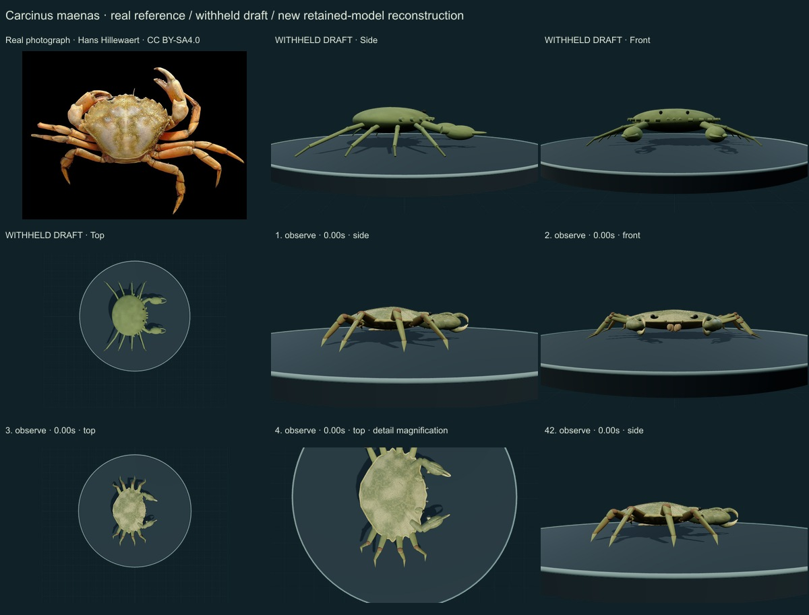
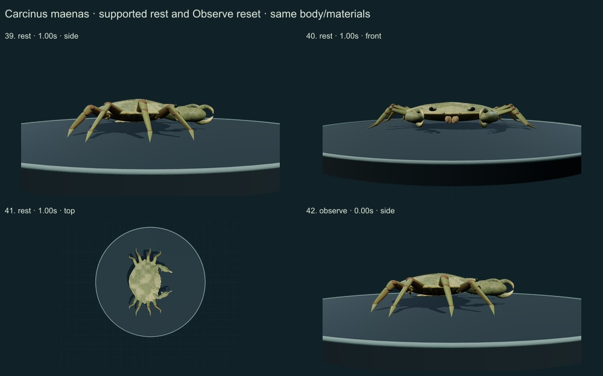
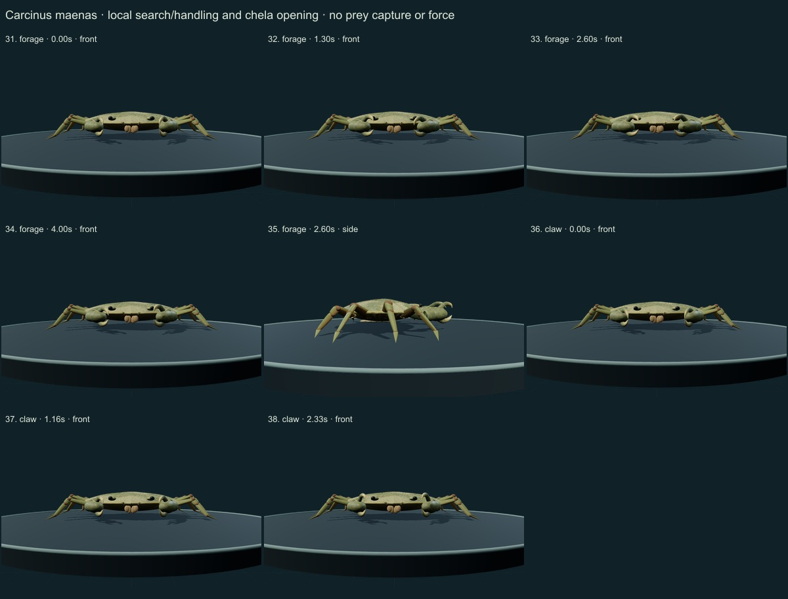
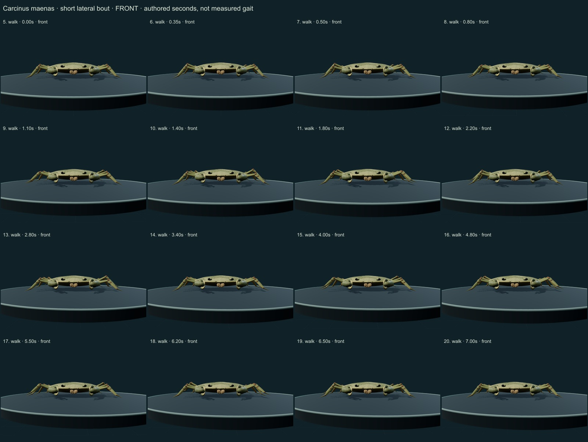
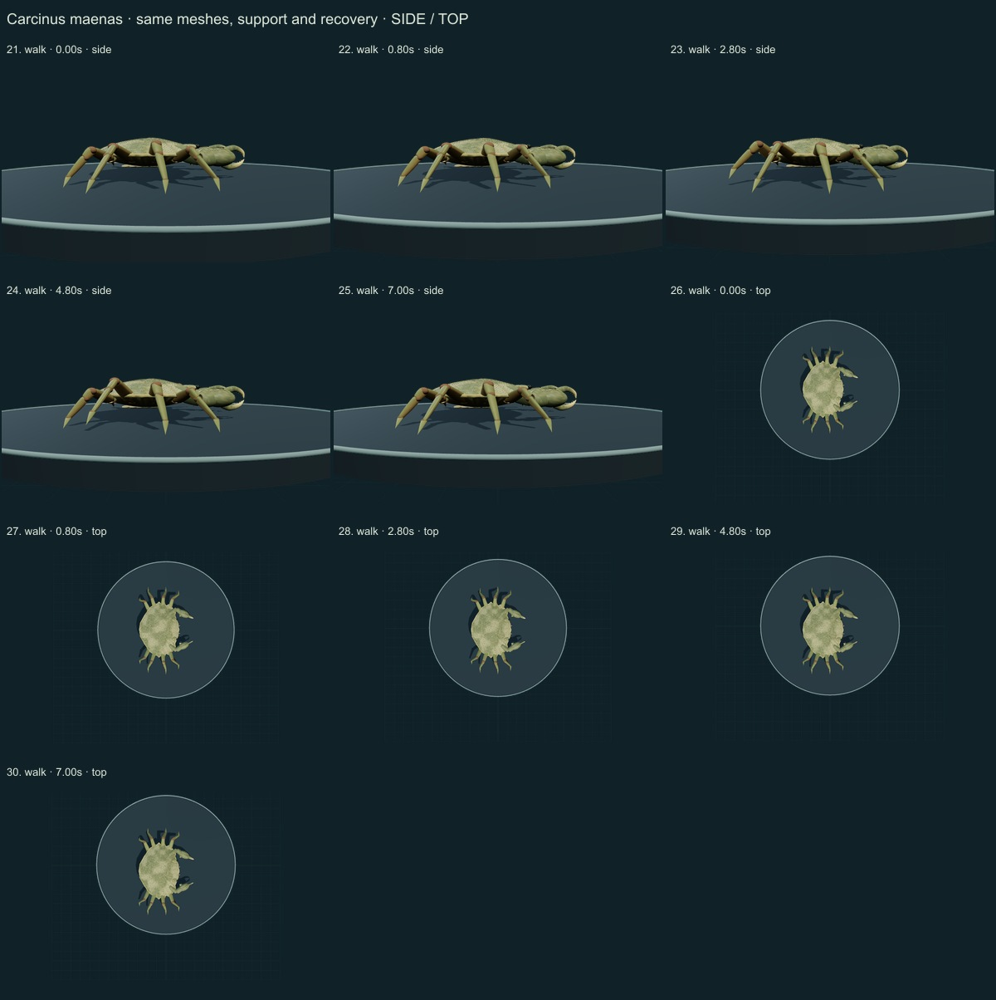

This release adds 1 species, reaching 252 / 550. Two of the fifty withheld drafts now have initial corrections; 48 remain withheld. 298 species remain to reach 550, including 250 without saved drafts. Previous edible-crab correction · Historical v0.6.13 review.
Author inspected 42 actual final nonblank WebGL2 states on five labelled sheets against the retained Hans Hillewaert photograph, Smithsonian SERC NEMESIS species morphology and selected primary Vidal-Gadea et al. 2008 methods/figures. This is qualitative author review, not independent expert assessment or a percentage accuracy measurement.
“Common shore crab” follows MarLIN; Smithsonian NEMESIS uses “green crab”. These vernaculars refer to the same displayed species concept. The Smithsonian account is a SERC species account, not a collection re-identification of this specimen.
The primary paper includes three different species. Selected methods, its stance/swing and joint figure (Fig.1, page96), and comparative morphology (Fig.2/selected text, page99) were actually viewed in an author-hosted PDF. Raw coordinates and quantitative curves were not digitized. Its illustrations are not reprinted here. MarLIN labels its account not refereed.
Real laboratory reference: Hans Hillewaert, CC BY-SA 4.0. Resized/JPEG encoded, without generative alteration. The caption’s specimen width is a source-reported specimen measurement; the normalized 3D model is not fitted to it.
Before: Repeated smooth oval crab body, thin rod legs, oversized point eyes and indistinct front/anterolateral teeth.
Changed: Rear-tapered outline, five pointed anterolateral teeth per side, three frontal lobes, lower gastric/branchial relief, smaller ridged chelae with carpal-tooth cues and pale curved fingers. Eight plated articulated legs have longer middle pairs and shorter final pair with pointed tips.
Still approximate: Unmeasured proportions and regional layout; incomplete mouth/gill/ventral anatomy. No systematic sex, life-stage or moult-state model. The last legs are slightly flattened rather than expanded into a portunid paddle.
Before: Nearly uniform green shading and coarse generic relief.
Changed: Original uneven fine granules, numerical chitin normal field, olive/tan mottling and dorsal/ventral limb distinction; surfaces remain attached through poses.
Still approximate: The selected laboratory photo is not calibrated live-animal albedo or material data. Green through orange/red variation is documented, but this is one authored palette. It is not photogrammetry, a scan or measured chitin optics.
Before: One local chela gesture on fixed stick limbs; no supported walking.
Changed: Fixed-length articulated lateral bout with planted stance and lifted recovery, followed by settled hold. Same body/materials for local search/handling, claw opening, lowered quiet rest and Observe reset.
Still approximate: Authored phase timing and planar IK, without imported motion coordinates, validated biological joint limits, force/neural model, continuous collision proof or prey/ingestion mechanism. No swimming action is claimed.
Side/front/top body and quiet support, a front/side/top walking sequence, local search/handling, finger opening and reset. Enlarged views show authored surface relief and silhouette; they do not establish biological accuracy.





Targeted tests sample 285 walking states plus other controls, checking planted stance feet, recovery clearance, unchanged geometry/materials, fixed segment lengths and final hold/reset. Passing these consistency checks is not experimental validation.
Actual browser GLB export succeeds with the numerical normal texture and instance extension. It is a static pose, without an animation clip. Motion is available in the open source controller. Existing 251 species records, including the prior edible-crab correction, remain unchanged.
Download per-frame findings and exact provenance/checksums · Study the model